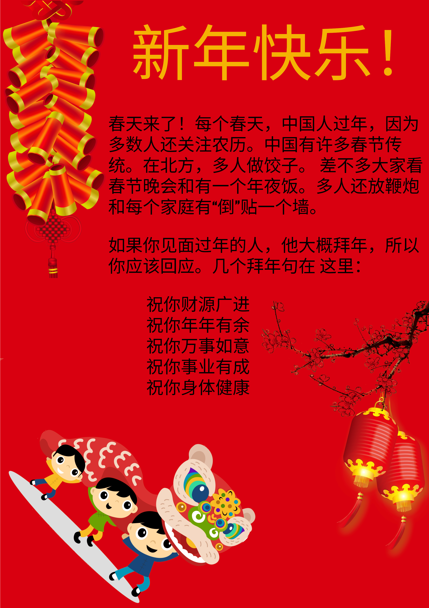

UNDER CONSTRUCTION!
Western Holidays
- 感恩节 Gǎn'ēnjié: Thanksgiving
- 圣诞节 Shèng dàn jié: Christmas
Chinese Holidays
- 中秋节 Zhōngqiūjié: Mid-Autumn Festival
- 除夕 Chúxī Chinese: New Years Eve
- 春节 Chūnjié: Spring Festival/Chinese Lunar New Year
- 元宵节 Yuánxiāojié: Lantern Festival
- 端午节 Duānwǔjié: Dragon Boat Festival
This might be a bit confusing, but 春节 (lit. Spring Festival) is the traditional Chinese New Year. It wasn't until 1911 that January 1st on the Gregorian calendar became New Year's Day in China. Even to this day, the days most people celibrate holidays is based on the Lunar calendar (农历 nónglì).
This isn't really a seperate holiday, but is the final day of the New Year season, which tradtionally lasted from New Years Eve to the 15th of the 1st month.
